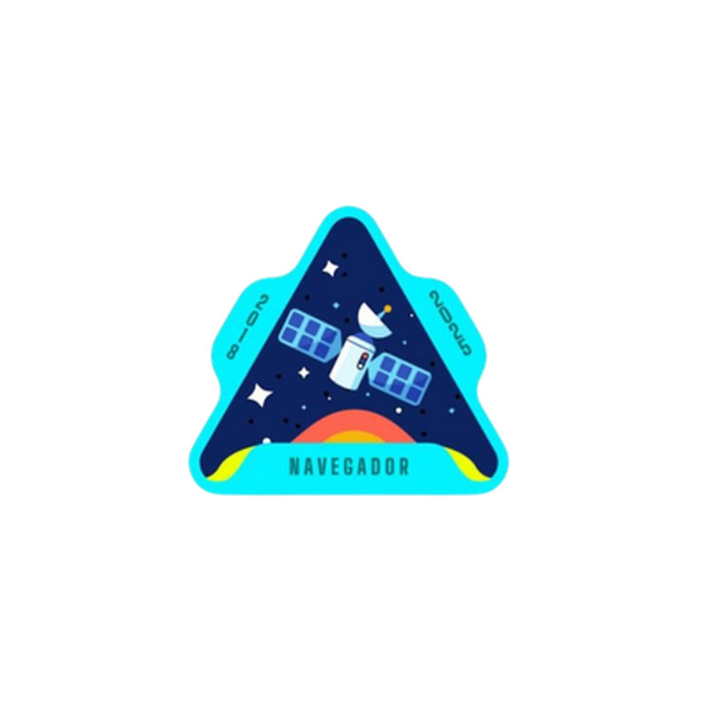

Perfil Navegador
O Competitivo e Direto

Caracteristicas Principais:
- Tem foco em resultados, metas e eficiência.
- Agem de maneira objetiva e prática.
- Costumam ser vistos como líderes naturais ou dominantes.
- Preferem resolver rapidamente os problemas, sem rodeios.
Pontos Fortes:
- Determinados, não desistem fácil.
- Sabem tomar decisões sob pressão.
- Diretos na comunicação.
- Ambição e impulso para alcançar objetivos.
Pontos de Atenção:
- Podem parecer insensíveis ou autoritários.
- Tendência ao individualismo.
- Podem negligenciar aspectos emocionais do trabalho em equipe.
- Impaciência com processos mais lentos ou pessoas mais cautelosas.
Ambiente ideal: competitivo, com espaço para assumir riscos e alcançar objetivos ousados.
Seu Perfil de Personalidade